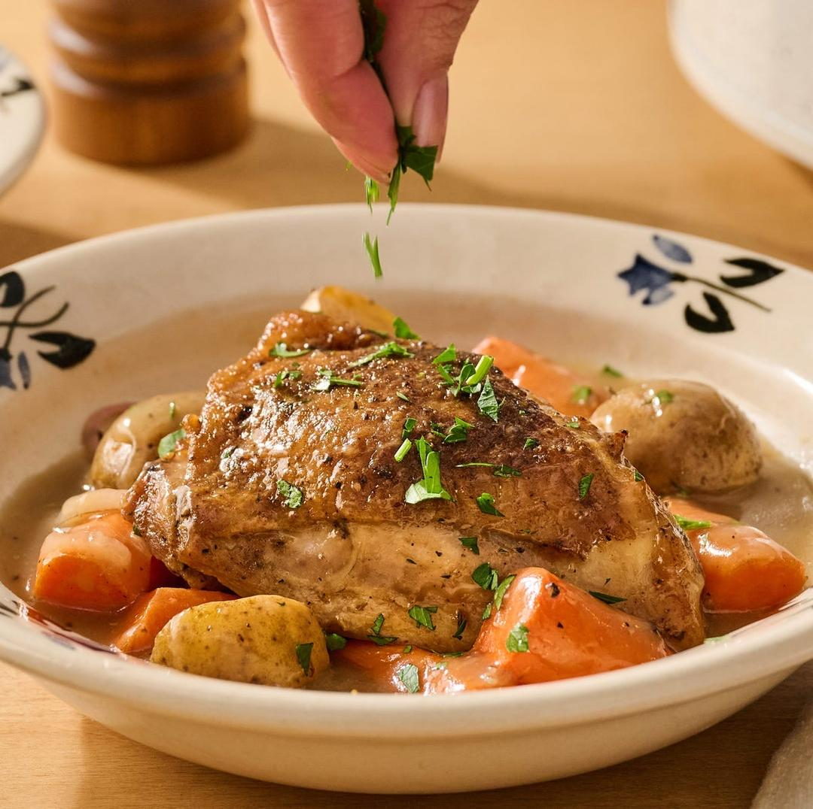

Slow Cooker Chicken Thighs

Servings: 4 servings
Active Time: 25 minutes
Total Time: 6 hours 30 minutes
Ingredients
- 1/2 tsp. garlic powder
- 1/2 tsp. Italian seasoning
- 1/2 tsp. onion powder
- 1/2 tsp. paprika
- 3 tsp. kosher salt
- 1 tsp. ground black pepper
- 6 bone-in, skin-on chicken thighs (about 2 1/2 pounds)
- 2 tbsp. olive oil
- 1 lb. carrots, cut into 1-inch pieces
- 1 lb. baby white potatoes, halved if large
- 4 garlic cloves, chopped
- 4 thyme sprigs
- 2 shallots, sliced
- 1/4 c. low-sodium chicken broth
- 2 tbsp. salted butter, cubed
- 2 tsp. cornstarch (optional)
- Fresh parsley, chopped, for serving (optional)
Directions
- 1 In a small bowl, mix together the garlic powder, Italian seasoning, onion powder, paprika, 1 teaspoon of the salt, and 1/2 teaspoon of the pepper. Pat the chicken dry with a paper towel, then season all sides with the spice mixture, rubbing it in to coat. 2 In a large cast-iron skillet, heat the oil over medium heat. Add the chicken thighs, skin-side down, and cook until golden brown, about 4 minutes. Remove to a plate. 3 Arrange the carrots and potatoes in a single layer in a 6-quart slow cooker. Scatter the garlic, thyme, and shallots over the top. Season with the remaining 2 teaspoons salt and 1/2 teaspoon pepper, then pour the chicken broth over everything. 4 Arrange the chicken, skin-side up, in a single layer on top of the vegetables in the slow cooker. Scatter the cubed butter over the top. Cover and cook on low heat for 4 to 6 hours, or on high heat for 2 1/2 to 3 hours, until the internal temperature of the chicken is 165°F and the potatoes and carrots are tender. If you would like a slightly thicker sauce, remove the chicken thighs to a plate. In a small bowl, whisk together the cornstarch and 1 tablespoon water. Add the cornstarch slurry to the slow cooker and stir until incorporated. Add the chicken back to the slow cooker, cover, and cook on high for 5 to 10 minutes, until the sauce is thickened. Serve the chicken on top of the vegetables. Spoon over some liquid from the slow cooker and sprinkle with parsley, if you like.